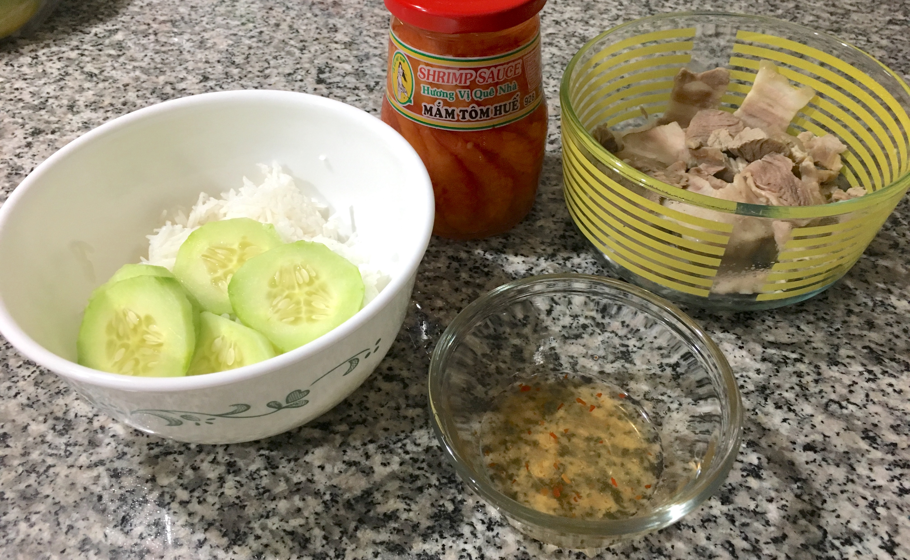

| Other | Meat | Veggie | Fruit |
|---|---|---|---|
| mam tom | pork belly | ||
| pepper | |||
| salt |
| instructions |
|---|
| Marinate pork belly with salt and pepper |
| Blanche meat, then dump liquid and thoroughly rinse to remove impurities |
| Boil pork belly with more marinade on medium high heat ~60 min, then move to ice bath |
| Slice pork belly |
| Serve with tom mam sauce |